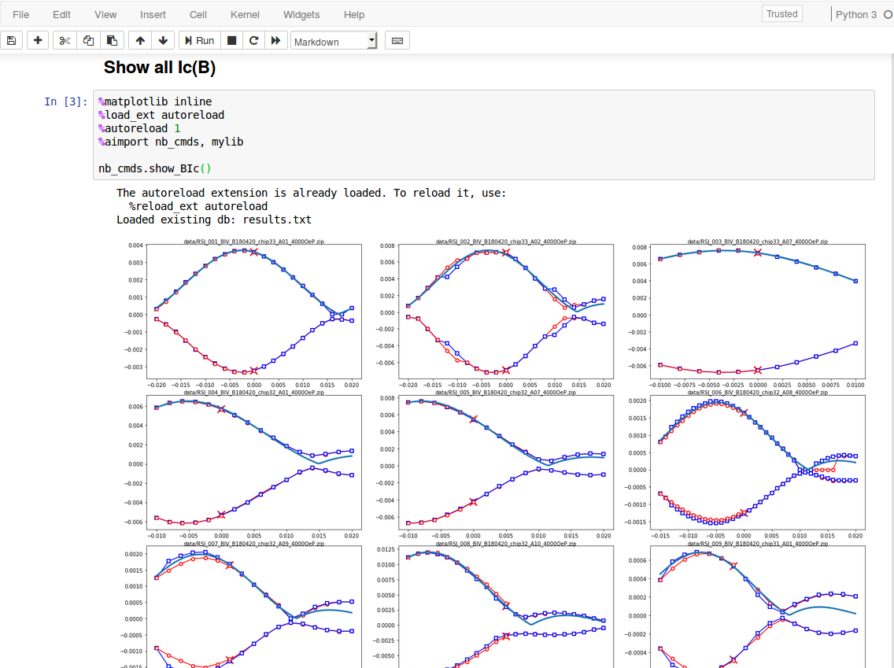

Python package for experimental research on superconductor-ferromagnet structures. The package includes test/measurment control, data processing, and analysis.
All should function with Windows 7. Modern Linux systems should work fine except the experiment control. Python 3 is required. Required python packages are numpy, matplotlib, scipy, and pandas. If you use Anaconda distribution,
conda install numpy matplotlib scipy pandas
Certain, obsolete modules may require additional modules such as xlrd. They should be available from conda or pip.
Go to the root of the repository where setup.py is located, then run
pip install -e .
To uninstall, run
pip uninstall cryomem
Depending on the modules to use, you may need to install required packages including numpy, matplotlib, scipy, pandas. If you use an anaconda distribution, run conda install <package>. If the package is not available from conda, pip search <package> then pip install <package>.
To upgrade the version, cd to the new source and run
pip install -e . -U
From the command line, run
cryomem
It should show available subcommands.
Although the package is basically a library, some functions/methods can be run from the command line for agile or scripted work. This is recommended for a routine experiment control.
Display help message:
cryomem [--help]
Display help message for a <command>:
cryomem <command> --help
General form. <parameters> is a list of arguments followed by keyword arguments. A keyword argument is given by --<key> <value> [more values].
cryomem <command> [<parameters>]
Load the code and call help as needed:
from cryomem.dipprobe.dipprobe import DipProbe
probe = DipProbe()
probe.help()
Example with a config file:
probe.load_config(file="log_R_T.yaml")
probe.log()
To directly pass parameters without a config file:
parameters = {
"device": {
"R_thermometer": {
"name": "Thermometer resistance",
"unit": "K",
"read_module": "cryomem.tnminstruments.KT2001",
"read_class": "KT2001",
"read_class_keyword_arguments": {
"interface": "gpib11"
},
"read_method": "read_R4W",
},
"t": {
"name": "Time",
"read_module": "time",
"read_method": "time"
},
"T": {
"name": "Temperature",
"unit": "K",
"read_module": "cryomem.dipprobe.thermometer",
"read_class": "Cernox",
"read_class_keyword_arguments": {
"serial": "X104724"
},
"read_method": "get_temperature",
"input_variable": "R_thermometer"
},
},
"sequence": {
"log": {
"datafile_increment": "Yes"
"datafile_name": "testlog.txt",
"delay": 2,
"duration": 3600,
"read": ["t", "R_thermometer", "T"],
"plot_prop": ["t", "T"]
},
"set_device": {
"val": 0
}
}
}
probe.load_config(parameters=parameters)
probe.log()
If a config file is already loaded this procedure adds new parameters or overwrites existing ones.
Subpackage dipprobe has been written to use config files extensively for test/measurement settings. Measurement instruments, target parameters, DAQ sequence parameters can be specified in a YAML file to achieve both flexibility and efficiency. See .yaml files in cryomem/test/dipprobe, cryomem/test/dipprobe2, or the following section for an example.
A config file is loaded from the command line by a parameter
--config <config file>
or from a python script by calling a method:
<instance>.load_config(file=<config file>)
One of the main experiments is measuring Josephson junction current-voltage with a field sweep. I can set up the config file:
# Define device physical parameters to set or read.
device:
B:
name: Field bias
unit: T
write_module: cryomem.tnminstruments.SR830
write_class: SR830
write_class_keyword_arguments:
interface: gpib9
write_method: set_auxvout
write_method_keyword_arguments:
channel: 1
divisors:
B_per_I: 0.0674
I_per_V: -2.0
max: 0.4
step: 0.0005
delay: 0.001
IV:
name: IV trace
unit:
- A
- V
read_module: cryomem.tnminstruments.KS6000X
read_class: KS6000X
read_class_keyword_arguments:
interface: USB0::0x0957::0x1790::MY54130118::INSTR
read_method: get_wfm
read_method_keyword_arguments:
acquire: yes
scale:
- 0.002
- 0.0001
init_method: config_wfm
init_method_keyword_arguments:
ch:
- 1
- 2
mode: average
# Specify arguments passed to the sequences (hard-coded) that
# set or read physical quantities defined above.
sequence:
set_device:
val: 0
sweep:
datafile_increment: yes
datafile_name: testrun
delay: 2
sweep:
- B
read:
- IV
Then I can run a sweep:
cryomem dipprobe2 sweep --config MJJ.yaml --datafile_name testsweep --range 0 0.002 0.006 -0.001 -0.01 0.002 0
Note datafile_name is updated by the command line argument. Resulting data (including metadata) are saved to data/001_testsweep.zip.
Code for scientific analysis is included. I usually use Jupyter notebook for the integrated documentation capability. See under cryomem/test/dipprobe2 for an example.

dipprobe DAQ
YAML configuration file handling
Zip-format datafile handling
Fit
Subpackages are intended to be independent from each other except "common" subpackage. Example subpackages:
The entrypoint is "cryomem.py". The run commands are registered in the beginning of the entrypoint module.